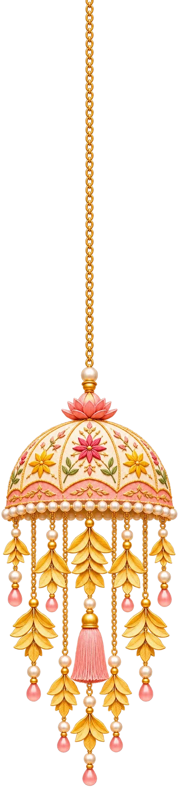

ੴ
ਸਤਿਗੁਰੂ ਦਾਤੇ ਕਾਜਿ ਰਚਾਇਆ ਆਪਣੀ ਮੇਹਰ ਕਰਾਈ। ਦਾਸਾਂ ਕਾਰਜ ਆਪ ਸਵਾਰੇ ਇਹ ਉਸ ਦੀ ਵਡਿਆਈ॥
With the blessings of Waheguru Ji
we request the honour of your presence
at the wedding celebration of
Karanveer S/O S. Gurdeep Singh Gill & Smt. Manjit Kaur Gill Harleen D/O S. Harpal Singh Sandhu & Smt. Rajwinder Kaur Sandhu
Will you come?
A seat at our table is already yours